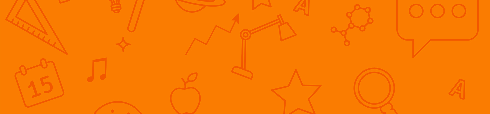

Tee demos kansion sisälle d2-kansio
Lisää luomaasi d2 kansioon index.html -tiedosto
Lisää sivun ylimmäiseksi STEM logo
Lisää myös fav icon
Tee menua kuvastava bullet lista: Science, Technology, Engineering, Mathematics
Lisää yläbanneri
Tee alaotsikot (h2) Science, Technology, Engineering, Mathematics
Anna sivulle ostikko esim STEM
Hae Google Fonts -fontti
Käytä fonttia h1:ssä
Science-otsikon alle:
Numeroitu fiktiivinen tehtävälista, joista osa yliviivattuja
Technology-otsikon alle:
Kuvituskuva ja tekstiä kuvan alle (figcaption)
Engineering-otsikon alle:
Listaus tyypillisimmistä HTML tageista (kokeile xmp-tagia)
Ohjeet gittiin lataukselle komentoriviltä käsin
Mathematics-otsikon alle:
Lisää taulukko esim. 2x10 ja täytä se kympin kertotaululla
Tee ankkurilinkit listan teksteistä väliotsikoihin
Lisää Contact -alaotsikko jonka alla upotettu Google maps
ⓘ Tässä harjoiteuksessa riittää, että sivulle on koostettu erilaisia HTML elementtejä, eikä niiden ulkoasu ole oleellinen.
Jos sivuston layout olisi toteutettu mainostoimistossa se voisi näyttää tältä: Figma
Figma-prototyypissä voit vaihdella desktop- ja mobiilinäkymän välillä vas ja oik nuolinäppäimillä.